Week7
三、Dilated Convolution膨胀卷积（空洞卷积）
（一）膨胀卷积和一般卷积的区别
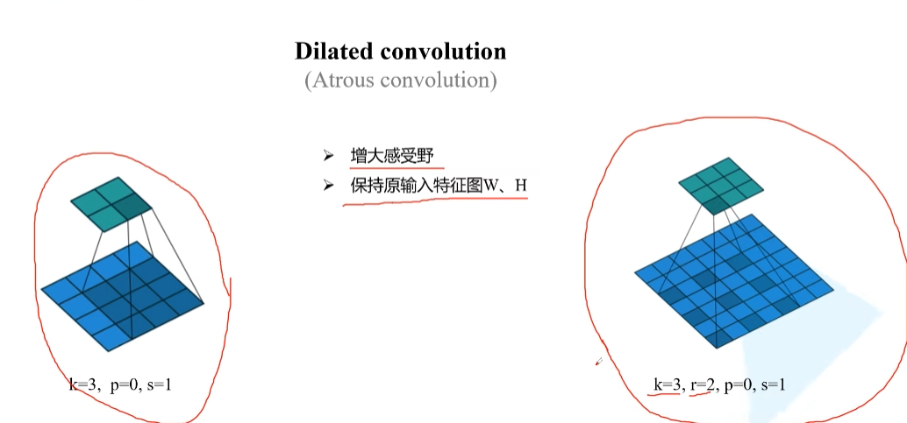
r是普通卷积和空洞卷积的差别所在，我们称之为膨胀因子。当r=1时，表示卷积核各元素之前没有空隙，即相邻两个元素间位置相差1，此时其实就是我们正常的卷积，所以广义上说，普通的卷积是一种特殊的空洞卷积；当r=2时，表示卷积核各元素之前有一个空隙，即相邻两个元素间位置相差2，此时就是我们上图中的卷积核，为方便大家理解，我把上图r=2时的卷积核提取出来，如下图所示：
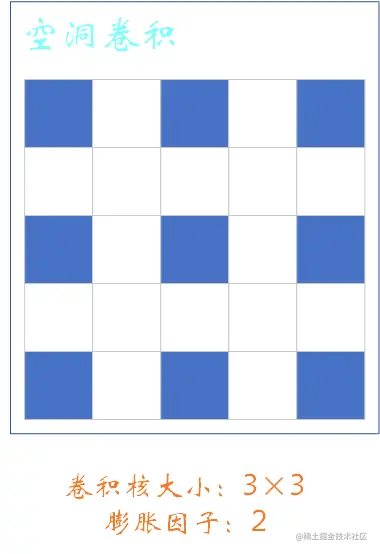
当然了当r=3、r=4都是同样的道理，这里就不过多叙述了。
（二）为什么使用膨胀卷积？
在语言分割任务当中，通常会使用分类网络作为网络的 backbone1 。
首先，通过backbone，将我们的图片进行一系列的下采样，然后再通过一系列的上采样还原我们原图的大小。平常在使用图像分类网络中，我们一般会将我们的高度和宽度下采样32倍。由于后续我们需要通过上采用还原回原图的尺寸，所以如果我们将特征图的高宽下采样倍率调的太大的话，对我们还原原因的影响是很大的。比如 VGG网络，它是通过最大池化下采样，即maxpooling层进行池化操作的。通过maxpooling操作之后，首先会降低特征图或者特征层的高度和宽度。其次，最大池化会丢失一些细节信息记忆一些比较小的目标，导致无法通过后续的上采样进行还原，造成语义分割中分割的效果不是特别的理想。
简单粗暴的去掉最大池化下采样层？
这会导致得到特征图对应原图的感受野变小（因为最大池化下采样层是能够增大图层的感受野的），而对于最大池化下采样层之后的一系列卷积层又是在之前所对应的感受野之上进一步的操作。如果简单粗暴的去掉最大池化下采样层，肯定会后面的卷积层也会带来一定的问题。
因此，需要使用到膨胀卷积。
优势：既能增大感受野，有你保持输入输出特征矩阵或特征图的高和宽不会发生变化
那么，是不是只要在语义分割任务当中简单粗暴的堆叠膨胀卷积层就可以？很明显不是
（三）膨胀卷积的缺点
在使用膨胀卷积的过程中经常会遇到一个名为 gridding effect2 的问题
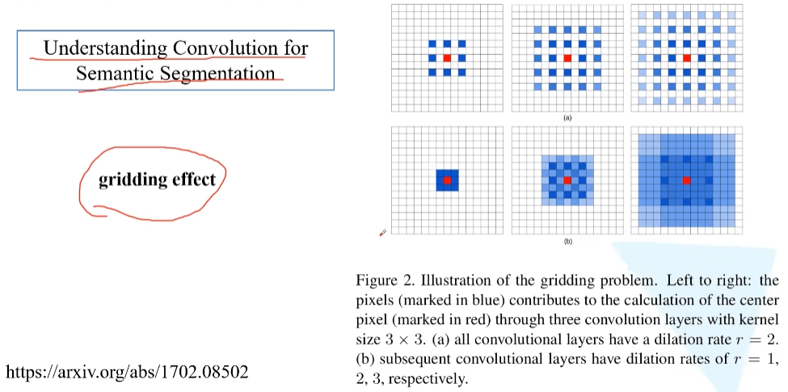
gridding effect
膨胀系数均为2
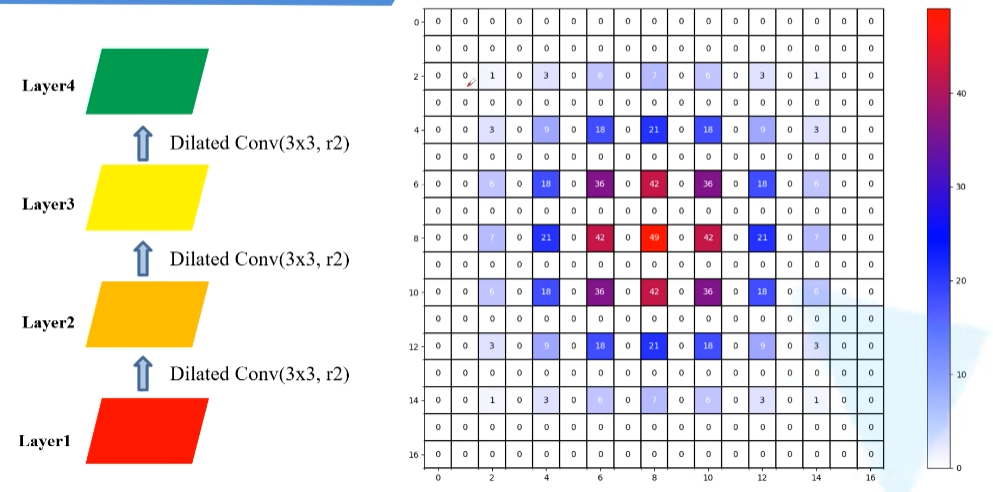
Layer4 上的 pixel 利用的Layer1的数据并不是连续的，每个非零元素之间都有一定的间隔
Layer4 上的像素并没有利用到范围内所有的像素值，而是利用到了期间的一部分，这样肯定会导致缺失一些细节上的信息
膨胀系数分别为1，2，3
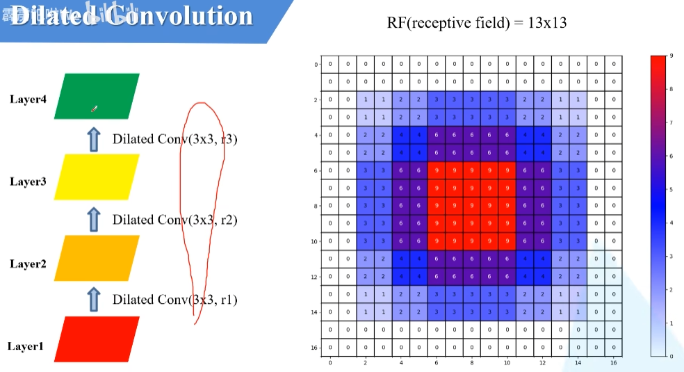
- Layer4 利用到了13 * 13 像素的参数，且这些参数间是相邻的
- 该实验的卷积核和膨胀卷积均为2的尺寸是一样的，参数一样的，只不过膨胀系数是不一样的
- 该图的视野和膨胀卷积均为2的一样，不过膨胀卷积均为2的很多像素并没有利用到，所以更倾向于使用膨胀系数分别为1，2，3。
- 如此对于高层的pixel而言，使用到的低层的数据是一个连续的区域
全部用普通卷积，即膨胀系数全部为1
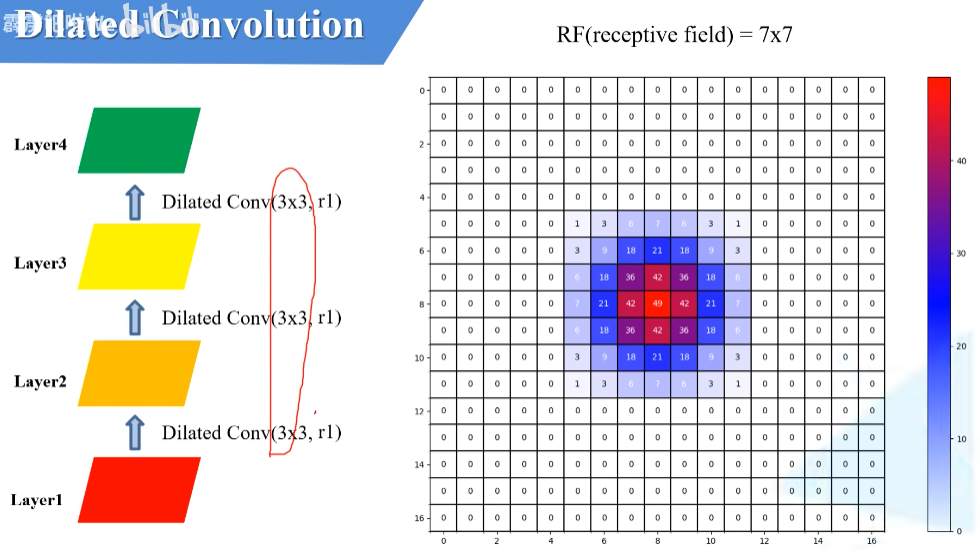
- 在参数数量相同的情况下，很明显使用了膨胀卷积之后的感受野增大了很多，从7 7（全部普通卷积） 变成了13 13（有膨胀卷积，不过根据设置的不用，像素的利用率也不同）
（四）常见的Hybrid Dilated Convolution (HDC)膨胀因子的设计准则
建议一：
根据前面几次的实验可以轻松得到，第二次实验中膨胀系数为1，2，3的膨胀卷积得到的效果比最开始采用三个系数均为2的膨胀卷积的效果要更好，因为引出合理的膨胀系数——Hybrid Dilated Convolution(HDC)。
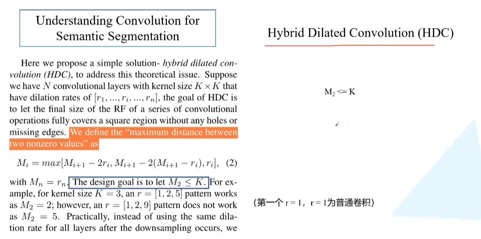
假设堆叠n个膨胀卷积，每个卷积核都是 ，如何每一个膨胀卷积的膨胀系数分别对应 到 。这里的HDC目标其实就是通过一系列膨胀卷积在之后，是能够完全覆盖底层特征层的一个方形区域的，而且这个方形区域没有任何的孔洞。定义为 “maximum distance between two nonzero values” 。（即先前实验图示当中非零元素距离为一的，就是没有间隔一列或行零元素）。
因为希望在高层特征层当中的一个pixel利用到底层整个区域的所有像素的话，$M_1$应该要等于1（意味着非零元素之间没有间隙）。因为$M_1$是三个数中取最大，那么$M_1$应该大于或等于$r_1$，所以$r_1$要从1开始。
$M_i$：表示对应第$i$层两非零元素之间的最大距离
$r_i$：对应的是第$i$层的膨胀系数
$M_n$：表示最后一次非零元素之间的最大距离等于2n
实例
dilated_rates = [1, 2, 5]统计实验像素的代码
1
2
3
4
5
6
7
8
9
10
11
12
13
14
15
16
17
18
19
20
21
22
23
24
25
26
27
28
29
30
31
32
33
34
35
36
37
38
39
40
41
42
43
44
45
46
47
48
49
50
51
52
53
54
55
56
57
58
59
60
61
62
63
64
65
66
67
68
69
70
71
72
73
74
75
76
77
78
79
80
81
82
83
84
85
86
87
88
89
90
91
92
93
94
95
96
97
98import numpy as np
import matplotlib.pyplot as plt
from matplotlib.colors import LinearSegmentedColormap
def dilated_conv_one_pixel(center: (int, int),
feature_map: np.ndarray,
k: int = 3,
r: int = 1,
v: int = 1):
"""
膨胀卷积核中心在指定坐标center处时，统计哪些像素被利用到，
并在利用到的像素位置处加上增量v
Args:
center: 膨胀卷积核中心的坐标
feature_map: 记录每个像素使用次数的特征图
k: 膨胀卷积核的kernel大小
r: 膨胀卷积的dilation rate
v: 使用次数增量
"""
assert divmod(3, 2)[1] == 1
# left-top: (x, y)
left_top = (center[0] - ((k - 1) // 2) * r, center[1] - ((k - 1) // 2) * r)
for i in range(k):
for j in range(k):
feature_map[left_top[1] + i * r][left_top[0] + j * r] += v
def dilated_conv_all_map(dilated_map: np.ndarray,
k: int = 3,
r: int = 1):
"""
根据输出特征矩阵中哪些像素被使用以及使用次数，
配合膨胀卷积k和r计算输入特征矩阵哪些像素被使用以及使用次数
Args:
dilated_map: 记录输出特征矩阵中每个像素被使用次数的特征图
k: 膨胀卷积核的kernel大小
r: 膨胀卷积的dilation rate
"""
new_map = np.zeros_like(dilated_map)
for i in range(dilated_map.shape[0]):
for j in range(dilated_map.shape[1]):
if dilated_map[i][j] > 0:
dilated_conv_one_pixel((j, i), new_map, k=k, r=r, v=dilated_map[i][j])
return new_map
def plot_map(matrix: np.ndarray):
plt.figure()
c_list = ['white', 'blue', 'red']
new_cmp = LinearSegmentedColormap.from_list('chaos', c_list)
plt.imshow(matrix, cmap=new_cmp)
ax = plt.gca()
ax.set_xticks(np.arange(-0.5, matrix.shape[1], 1), minor=True)
ax.set_yticks(np.arange(-0.5, matrix.shape[0], 1), minor=True)
# 显示color bar
plt.colorbar()
# 在图中标注数量
thresh = 5
for x in range(matrix.shape[1]):
for y in range(matrix.shape[0]):
# 注意这里的matrix[y, x]不是matrix[x, y]
info = int(matrix[y, x])
ax.text(x, y, info,
verticalalignment='center',
horizontalalignment='center',
color="white" if info > thresh else "black")
ax.grid(which='minor', color='black', linestyle='-', linewidth=1.5)
plt.show()
plt.close()
def main():
# bottom to top
dilated_rates = [1, 2, 3]
# init feature map
size = 31
m = np.zeros(shape=(size, size), dtype=np.int32)
center = size // 2
m[center][center] = 1
# print(m)
# plot_map(m)
for index, dilated_r in enumerate(dilated_rates[::-1]):
new_map = dilated_conv_all_map(m, r=dilated_r)
m = new_map
print(m)
plot_map(m)
if __name__ == '__main__':
main()执行效果：
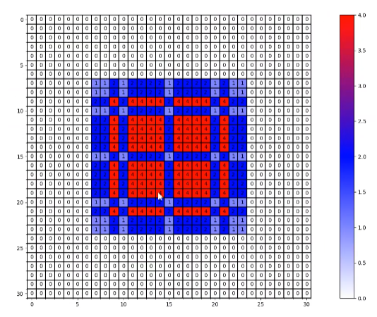
解析：
很明显，已经将整个区域当中的所有的像素都利用到了，即不存在 gridding effect 的我呢提
dilated_rates = [1, 2, 9]效果
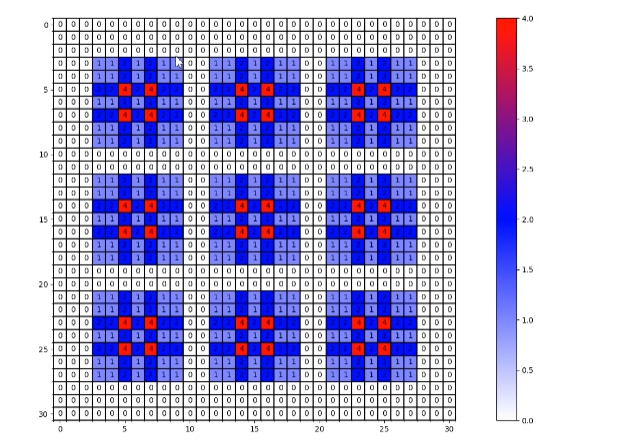
解析
很明显在整个区域内，非零元素之间的最大距离应该等于3，即元素与元素之间有两个或者两列零
建议二：
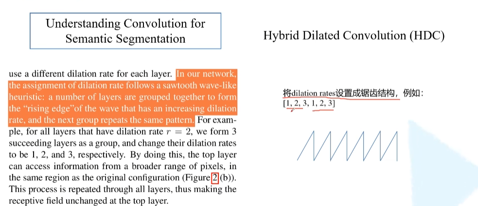
但是以下情况仍存在gridding effect效应：
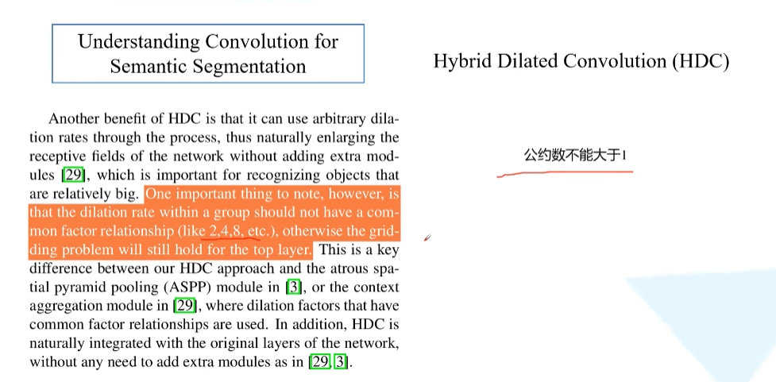
实例：dilated_rates = [2, 4, 8]
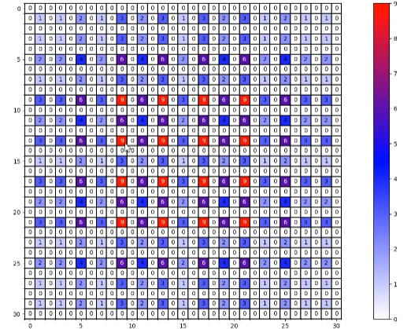
可见非零元素之间还是存在零的，即高层当中依然没有使用到第一层当中的部分信息，故而这种情况是不行的。
（五）效果对比
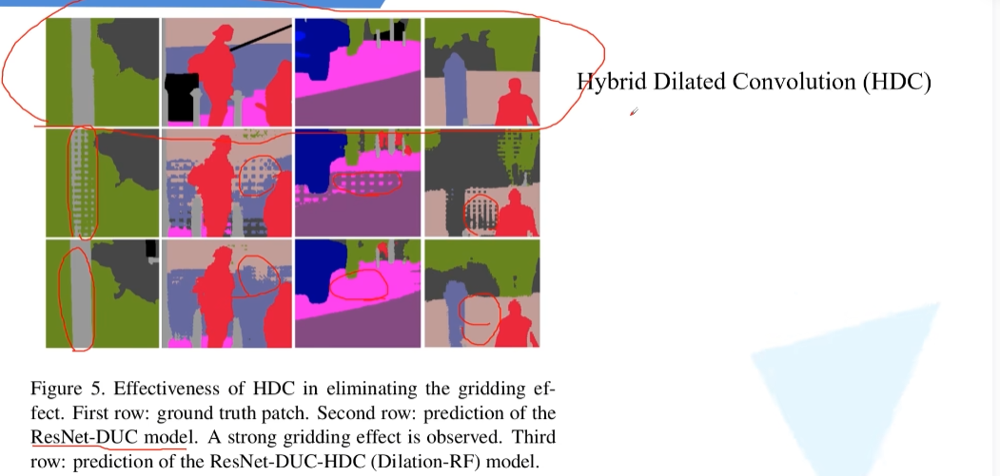
四、U-Net网络结构讲解（语义分割）
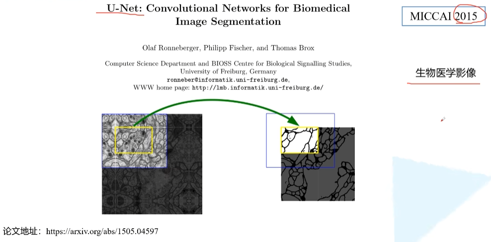
结构图示
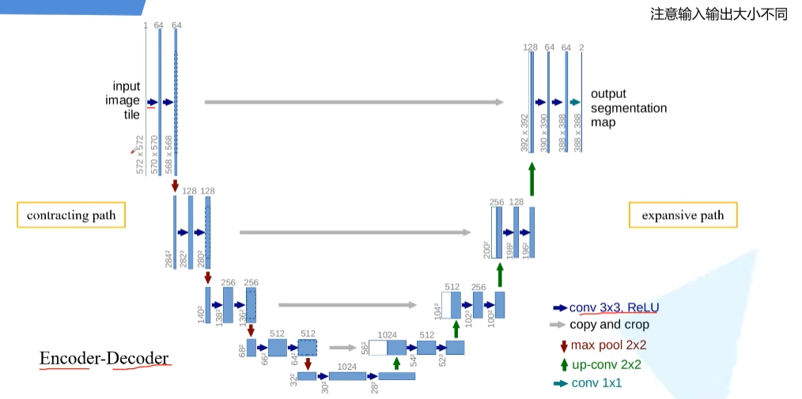
- Encoder：U形左半部分（contracting path），特征提取以及下采样的部分
- Decoder：U形右半部分（expansive path），解码以及通过上采样得到最终的分割图的分割图
- 图中每一个长条都表示一个特征层，箭头表示一种操作（图示右下角有标注箭头对应的操作类型）
实现过程
输入为572 * 572 的单通道图片
首先通过卷积核为3 3、激励函数为ReLU、步距为1、没有进行 padding 的卷积层，此后图像的高和宽都会减少，（572 572）->（570 570）- >（568 568）
1. 指的是提取特征的网络，其作用就是提取图片中的信息，共后面的网络使用。这些网络经常使用的是resnet、VGG等，而不是我们自己设计的网络，因为这些网络已经证明了在分类等问题上的特征提取能力是很强的。在用这些网络作为backbone的时候，都是直接加载官方已经训练好的模型参数，后面接着我们自己的网络。让网络的这两个部分同时进行训练，因为加载的backbone模型已经具有提取特征的能力了，在我们的训练过程中，会对他进行微调，使得其更适合于我们自己的任务。 ↩
2. Understanding Convolution for Semantic Segmentation ↩